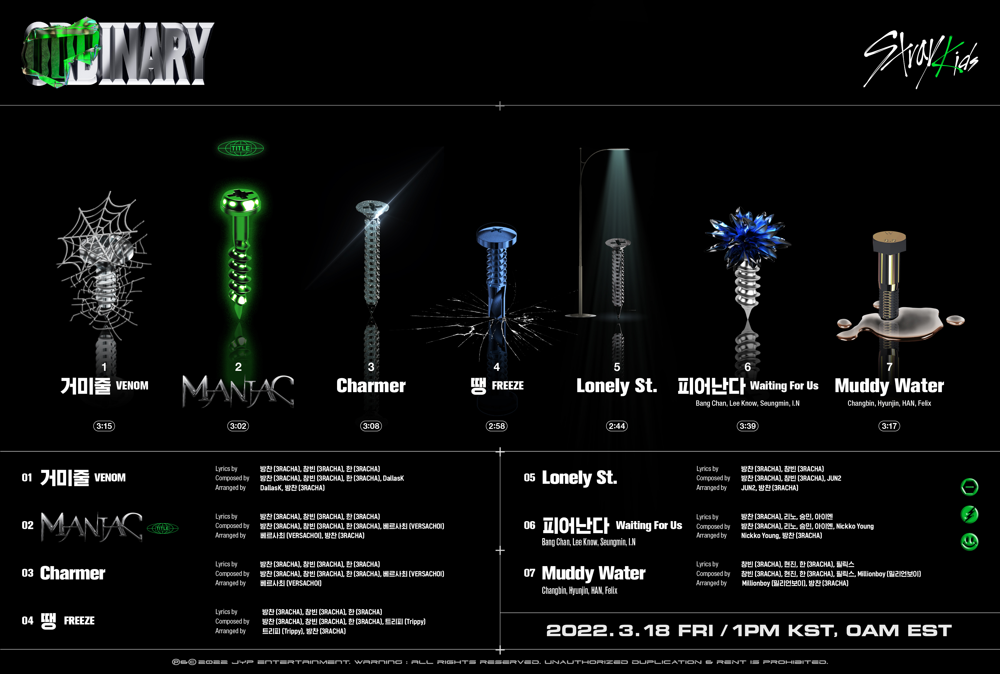

SONGS
Titletrack: Maniac
Maniac is the lead single of the album and was released on march 18, 2022.
It was written by 3Racha, a production team from the members of StrayKids and Versachoi.
Maniac made its appearance on the Billboard Bubbling Under Hot 100 in several countries, and took two wins from music programs.
The song is described as a Middle Eastern-influenced "powerful" trap, electropop song.
The song is about "odd" people who break the "ordinary" social norms set by the world, referred to Frankenstein's monster and encourages people, to be themself.
Whole Tracklist
